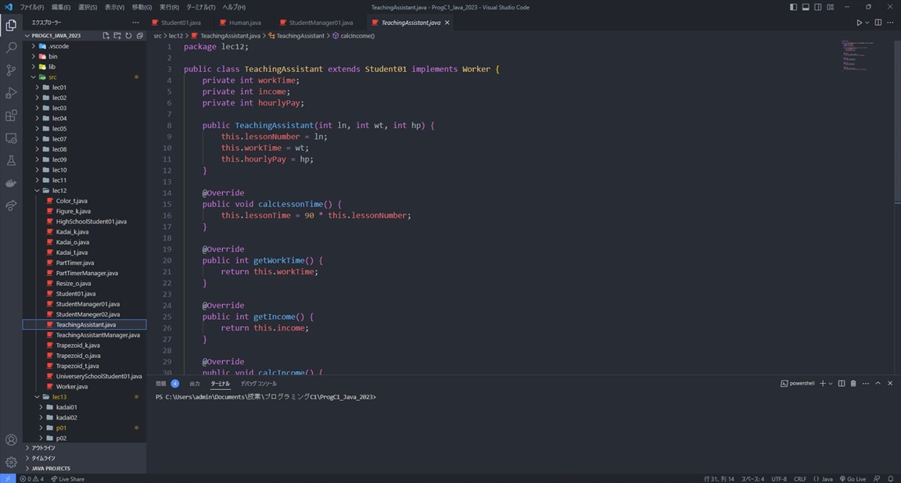

授業・実験
ウェブサーバー構築
この授業ではウェブサーバーを自分で立てて仮想の大学のホームページを構築しました。HTMLなどでホームページを作成し、WordPressで大学のお知らせサイトを構築しました。
利用した技術
- Ubuntu Server
- Apache
- HTML・CSS・JavaScript
- WordPress
言語処理
私がオリジナルで開発した機能はWord2Vecを用いた音楽検索サービスです。自身が興味のある単語を2つ入力して、その2つの単語の中から似ている単語を1つを取り出し、その単語から曲を検索する機能を開発しました。
利用した技術
- Python
- 形態素解析
- SVM
- Word2Vec
- Slack API・Spotify API
システム開発
この授業ではメンバー同士でスクラムを組んでサービスの開発を一通り行いました。
まずユースケース図を用いてユーザーやステークホルダーの要求を明らかにし、アクティビティ図やシーケンス図でアプリの振る舞いや構成を設計します。
その後実際にツールを用いてDiscordのチャットボットの開発を行い設計の実装方法を体験しました。
- UML・SysML
- Docker・GitHub
- アジャイル開発・スクラム
プログラミング言語
プログラミング基礎Ⅰ・Ⅱ(Python)
プログラミングB1・B2(C言語)
プログラミングC1(Java)
